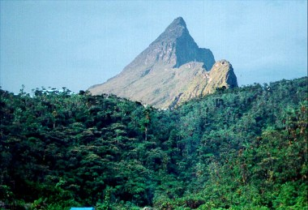

Relevo Região Norte
Grande parte dos rios escoa suas águas em lugares de planaltos e depressões, apesar de os rios de grande relevância, como Amazonas, Araguaia e o Guaporé, cortarem áreas de planícies.
Em uma área de planalto encontra-se o ponto mais alto do país, com 2.993,8 metros de altitude, denominado de Pico da Neblina, localizado a noroeste do estado do Amazona
